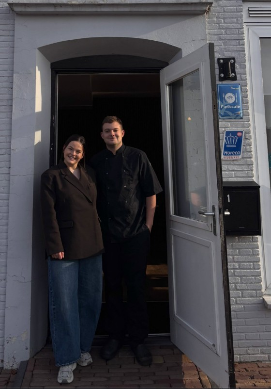

Adres
Bistro DeBuut
Dorpsplein 1
4507 BH Schoondijke
Je vindt Bistro DeBuut aan het Dorpsplein in Schoondijke, in West-Zeeuws-Vlaanderen.
Bistro DeBuut
Dorpsplein 1
4507 BH Schoondijke
Bel of app om een tafel te reserveren.
ReserveringsaanvraagNieuws, acties en de laatste updates vind je op Instagram.

Op vrijdag 6 november 2026 opende Bistro DeBuut de deuren in Schoondijke. Je kunt er terecht voor lunch, diner en drinks, van een eenvoudige tosti tot een ribeye, en van een kop koffie tot een cocktail.
Openingstijden en gegevens zoals vermeld in hun Instagram-profiel. Een e-mailadres wordt daar niet openbaar vermeld en is daarom niet getoond.